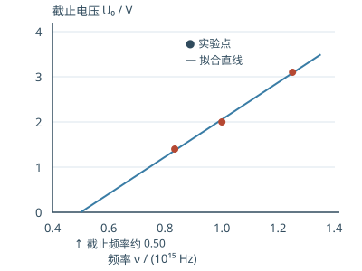

第十六章教材习题逐题讲解
按题号查看目录 （点击展开）
本页对应教材第 257—258 页的 20 题。建议先自己列出条件和所用规律，再展开核对。以下是依据扫描教材独立编写的解题说明，并非官方答案；近似数值可能因常数取值略有差别。
常用常数：h＝6.626×10⁻³⁴ J·s，c＝3.00×10⁸ m/s，e＝1.602×10⁻¹⁹ C，hc≈1240 eV·nm，电子静能 mₑc²≈0.511 MeV，电子康普顿波长 h/(mₑc)≈0.002426 nm。
16-1 黑体一定是黑色的吗
不一定。黑体的定义是对入射的各种辐射都完全吸收，讲的是吸收能力；它自身也会辐射。温度足够高时，可见光部分足够强，能呈现红、黄或白色。相同温度下，理想黑体的单位面积光谱辐出度相同，与材料无关；不同温度下则不同，温度升高时总辐出度按 T⁴ 增长。
16-2 根据峰值波长估计温度
用按波长表示的维恩位移定律 λₘT＝2.898×10⁻³ m·K。依次代入 0.47、0.35、0.29 μm，得到约 6.17×10³ K、8.28×10³ K、9.99×10³ K。峰值波长越短，估计的温度越高；恒星按理想黑体处理只是近似。
16-3 太阳辐射与质量亏损
取 R＝0.7×10⁹ m，由 P＝4πR²σT⁴ 得 P≈3.69×10²⁶ W。能量与质量的关系给出每秒质量减少 P/c²≈4.10×10⁹ kg/s。
若机械地假设这个速率始终不变，损失 2.0×10²⁸ kg 需约 4.88×10¹⁸ s，即 1.55×10¹¹ 年。这是题设下的数量级估算，不能当作真实太阳寿命：长期演化中辐射功率等条件会变。
计算步骤：太阳直径 1.4×10⁹ m，先除以 2 得半径 R＝0.7×10⁹ m；表面积是 4πR²，不是 πR²。把 T＝5700 K 代入 P＝4πR²σT⁴，再由每秒辐射能量 P 对应质量 P/c²，得到约 4.10×10⁹ kg/s。第二问所求质量是 2.0×10³⁰×1%＝2.0×10²⁸ kg；用它除以每秒损失量，再按 1 年约 3.156×10⁷ s 换算。
16-4 辐出度增加
由 λₘT＝常数，T₂/T₁＝0.69/0.50＝1.38。总辐出度比值为 (T₂/T₁)⁴≈3.63。即末值是原来的 3.63 倍，增加量是原来的约 2.63 倍；“增加了几倍”容易混淆，应说明口径。
16-5 光电子速度为什么不一样
单色光的每个光子能量相同，但金属内电子原有能量、位置及向外运动中损失的能量不同，因此逸出电子的动能可以分布在不同值；最大动能才满足 Kₘₐₓ＝hν−W。
气体原子也有电离能：对给定初态的单光子电离，存在对应阈频 ν₀＝电离能/h。若气体原先处在不同激发态，阈值也随初态变化；多光子过程另当别论。
16-6 截止电压作图
先把三个波长换成频率，约为 0.833、1.000、1.250（单位均为 10¹⁵ Hz）。画 U₀ 对 ν 的散点图，由 eU₀＝hν−W，斜率是 h/e，纵截距是 −W/e。
三点不严格共线，采用直线拟合得到 U₀≈4.11×10⁻¹⁵ν−2.05 V（ν 用 Hz）。因此 h/e≈4.11×10⁻¹⁵ V·s，逸出功约 2.05 eV＝3.29×10⁻¹⁹ J，阈频约 5.00×10¹⁴ Hz。用手工作图得到略有差异是正常的。
作图步骤：将每个波长先化为频率 ν＝c/λ，再画三个点：(0.833,1.40)、(1.000,2.00)、(1.250,3.10)，其中频率单位统一为 10¹⁵ Hz。以直线近似表示趋势，斜率约为 4.11 V/(10¹⁵ Hz)，换回 Hz 后是 4.11×10⁻¹⁵ V·s；纵截距约 −2.05 V。U₀＝0 时横坐标约 0.50×10¹⁵ Hz，即截止频率。逸出功是 e×2.05 V，所以数值上为 2.05 eV，而不是 2.05 J。

16-7 磁场测最大动能
圆轨道说明速度垂直于磁场，e vB＝mₑv²/r，故 p＝eBr，Kₘₐₓ＝(eBr)²/(2mₑ)≈0.641 eV。入射光子能量 hc/λ≈3.54 eV，逸出功 W＝h c/λ−Kₘₐₓ≈2.90 eV，约 4.65×10⁻¹⁹ J。
计算步骤：①磁力提供向心力，整理为动量 p＝eBr；这里 e 取电荷量大小。②先用 K＝p²/(2mₑ) 得到最大动能约 0.641 eV。③波长 350 nm 对应光子能量约 1240/350＝3.54 eV，代入 W＝hν−Kₘₐₓ，结果约 2.90 eV。算到最后应检查逸出功小于入射光子能量，否则不会发生所述单光子逸出。
16-8 两种光的速度比
短波光子的能量 E₁≈3.54 eV，长波为 E₂≈2.30 eV。相同电子质量下速度比 2 对应动能比 4，因此 E₁−W＝4(E₂−W)，解得 W＝(4E₂−E₁)/3≈1.88 eV，约 3.01×10⁻¹⁹ J。
计算步骤：设长波情形最大动能为 K₂。电子质量相同，动能与速度平方成正比；速度比为 2，故短波情形 K₁＝4K₂。分别写 E₁−W＝K₁ 与 E₂−W＝K₂，消去 K₂ 得 E₁−W＝4(E₂−W)，于是 3W＝4E₂−E₁。代入约 3.54 eV 和 2.30 eV，得 W≈1.88 eV。两种光都能使电子逸出，结果应小于两者中较小的光子能量。
16-9 光子的能量与动量
（1）题目采用历史上的氪谱线定义，λ＝1/1650763.73 m≈605.8 nm。E＝hc/λ≈3.28×10⁻¹⁹ J＝2.05 eV。现行米的定义与题中的历史定义不同，这不影响本题换算。
（2）令光子能量等于电子静能 0.511 MeV，由 ν＝E/h、λ＝hc/E、p＝E/c，分别得 1.24×10²⁰ Hz、2.43×10⁻¹² m、2.73×10⁻²² kg·m/s。按常见能区命名属于 γ 射线范围；X 射线和 γ 射线也常按产生机制区分。
16-10 同动量的光子和电子
电子动能 3 MeV 已远大于静能，不能套用非相对论公式。电子满足 (pc)²＝K(K＋2mₑc²)。相同动量的光子有 Eγ＝pc，故 Eγ＝√[3(3＋1.022)] MeV≈3.47 MeV。
计算步骤：先把电子的总能量写为 Eₑ＝K＋mₑc²，代入 Eₑ²＝(pc)²＋(mₑc²)²；展开后得到 (pc)²＝K²＋2K mₑc²。光子动量大小相同，而光子满足 Eγ＝pc，因此可直接对右边开方。K 和静能都以 MeV 代入，结果仍以 MeV 表示；不能把电子的动能直接当作它的总能量。
16-11 光电效应与康普顿散射
光电效应中，束缚在物质中的电子吸收光子并可能逸出；能量要扣除逸出功或束缚能。康普顿散射中，近似静止的自由电子与光子碰撞后，电子反冲，光子仍存在但方向和能量发生变化。两者都须满足能量和动量守恒，模型与末态不同。
16-12 90° 康普顿散射
Δλ＝λC(1−cosθ)；θ＝90° 时 Δλ＝0.002426 nm。相对于入射波长 0.04 nm，增量比例为 6.07%。波长增大而不是减小。
16-13 反冲电子能量
散射后波长变为 1.2λ，光子能量反比于波长，所以 E′＝0.60/1.2＝0.50 MeV。初始电子静止时，能量守恒得电子动能 K＝E−E′＝0.10 MeV；电子总能量还要加静能，约 0.611 MeV。
16-14 已知电子速度求散射角
v＝0.6c 时 γ＝1/√(1−0.6²)＝1.25，反冲电子动能为 (γ−1)mₑc²≈0.1278 MeV。入射光子能量约 0.4133 MeV，散射后为 0.2855 MeV，故 λ′≈0.00434 nm。
再用 λ′−λ＝λC(1−cosθ)，得到 cosθ≈0.447，散射角 θ≈63.5°。这里 θ 指散射光子相对于入射光子的夹角。
计算步骤：①先算相对论因子 γ＝1/√(1−0.6²)＝1.25，电子获得动能 (γ−1)mₑc²≈0.1278 MeV。②入射光子能量 hc/λ≈0.4133 MeV，散射后光子能量约 0.2855 MeV，所以 λ′≈0.00434 nm。③将 λ′−λ 代入康普顿公式，求 cosθ＝1−(λ′−λ)/λC≈0.447，再取反余弦得 θ≈63.5°。角度指光子的散射角，不是电子的反冲角。
16-15 可见光能否电离 n＝2 的氢
氢原子能级 Eₙ＝−13.6/n² eV。n＝2 到电离极限需要 3.40 eV，对应阈值波长约 1240/3.40＝365 nm，位于紫外区。因此通常可见光光子单独照射时不能直接电离该初态；多光子过程不在这道基础题的单光子模型内。
16-16 从 n＝5 跃迁到 n＝2
放出的光子能量为 13.6(1/2²−1/5²)＝2.856 eV。λ＝1240/2.856≈434 nm，属于巴耳末系可见光谱线。
16-17 玻尔轨道的磁场
按玻尔经典圆轨道模型，取 r＝5.29×10⁻¹¹ m、v＝2.19×10⁶ m/s。一个电子绕行形成的等效电流大小 I＝ev/(2πr)，圆心磁场大小 B＝μ₀I/(2r)＝μ₀ev/(4πr²)≈12.5 T。电流方向与电子运动方向相反，磁场方向再用右手定则判断。这是模型估算，不应理解成现代量子态中电子沿确定小圆轨道运行。
16-18 可以出现多少条谱线
若一批氢原子被激发至 n 能级，并允许逐级或跨级下降，任取两个不同能级即可对应一种能级差，最多 n(n−1)/2 条。对单个原子的一次级联过程，最多只能发出 n−1 个光子；题目通常问的是大量原子可能产生的不同谱线。
16-19 n＝3 态和红外光
向下跃迁 3→2 放出 13.6(1/4−1/9)≈1.89 eV，波长约 656 nm，是可见红光；3→1 约 102.6 nm，是紫外光，因此直接向下跃迁不能发射红外光。
向上吸收可选 3→4，所需能量 13.6(1/9−1/16)≈0.661 eV，对应约 1875 nm，在红外区。因此可以吸收频率恰好匹配该跃迁的红外光；不是任意红外频率都能被吸收。
16-20 发射莱曼第一线时原子反冲
莱曼第一线对应 2→1，能级差 ΔE≈10.2 eV。氢原子初始静止，动量守恒给 p原子＝p光子≈ΔE/c，所以反冲速率 v≈ΔE/(Mc)≈3.26 m/s，方向与光子相反。
部分能量变成原子的反冲动能 K≈(ΔE)²/(2Mc²)，光子能量比忽略反冲时略小，波长略长。相对增量近似 Δλ/λ≈ΔE/(2Mc²)≈5.43×10⁻⁹。这里比较的是同一次跃迁考虑与忽略反冲的波长，而不是两个不同参考系中的多普勒变化。
计算步骤：先把跃迁能 10.2 eV 转换为约 1.63×10⁻¹⁸ J，氢原子质量 1.008 u 约为 1.67×10⁻²⁷ kg。按光子动量近似 pγ≈ΔE/c，反冲速度 v≈pγ/M≈3.26 m/s。再由 K反冲＝pγ²/(2M)≈(ΔE)²/(2Mc²)，得到 K反冲/ΔE≈5.43×10⁻⁹。光子损失这部分能量，而 λ 与光子能量成反比，故相对波长增量同样约为 5.43×10⁻⁹。
复习与参考
先区分黑体辐射的整体规律、单个光子的能量动量、电子的相对论动能，再判断原子跃迁是向上吸收还是向下发射。OpenStax：光电效应、OpenStax：康普顿散射、OpenStax：玻尔模型可用于查阅原理。